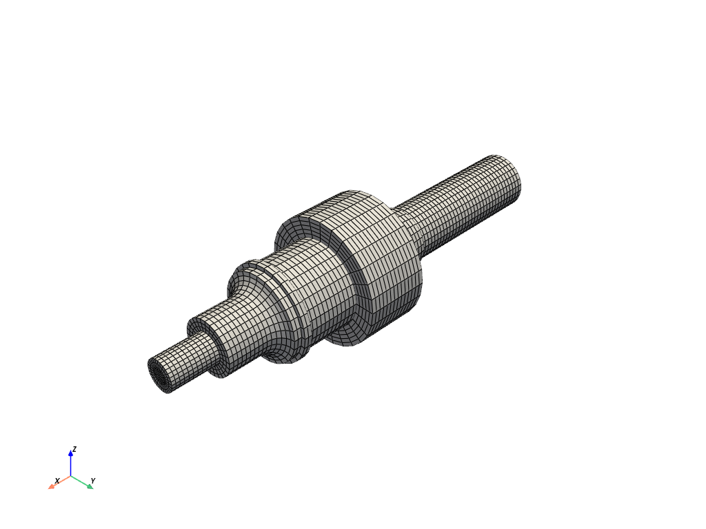
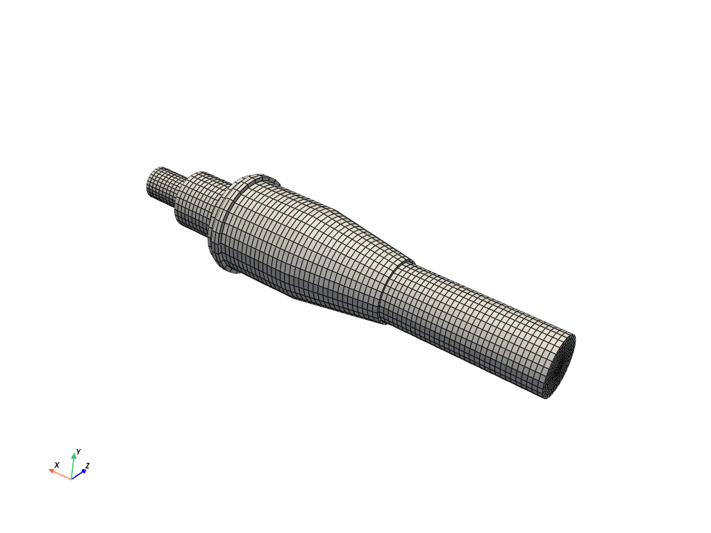
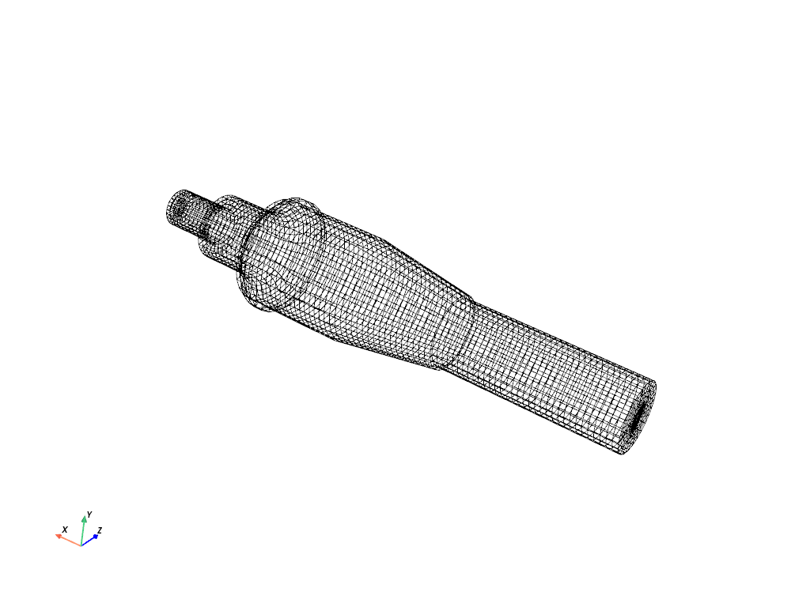
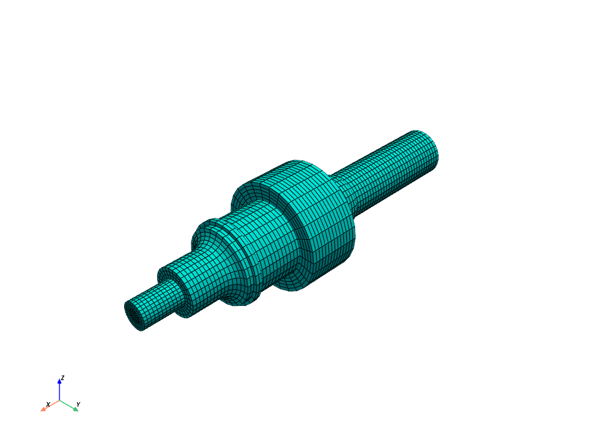
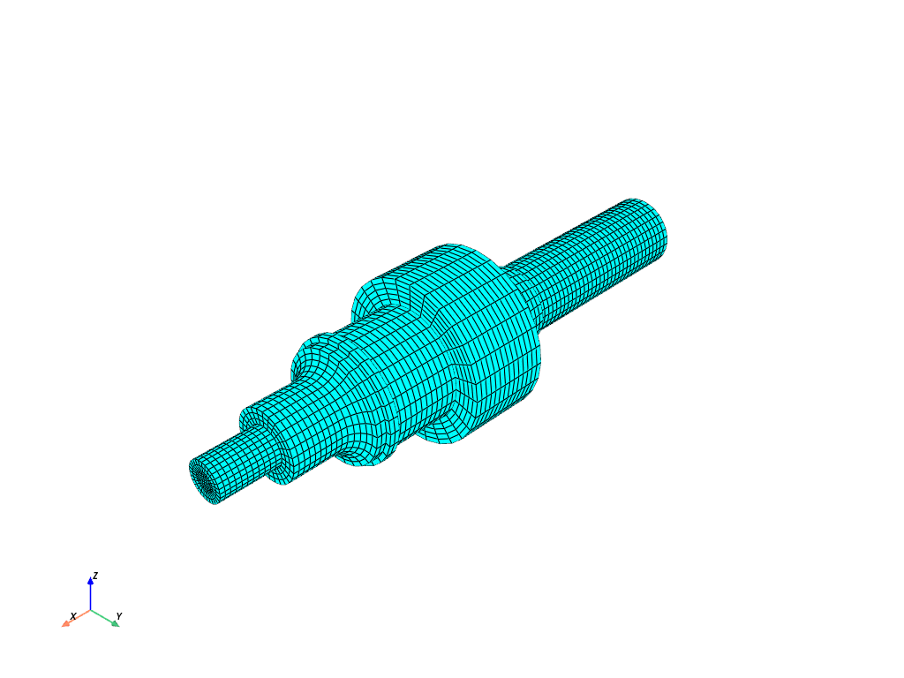
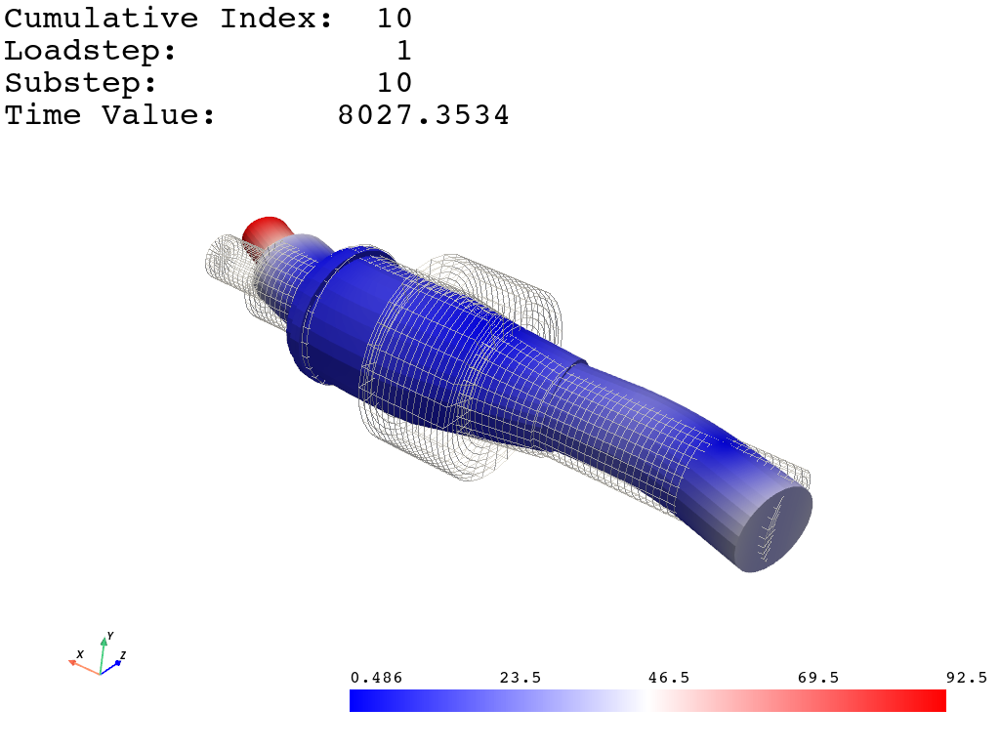
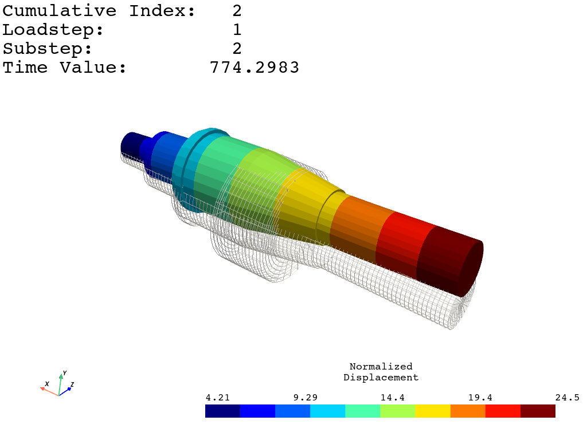
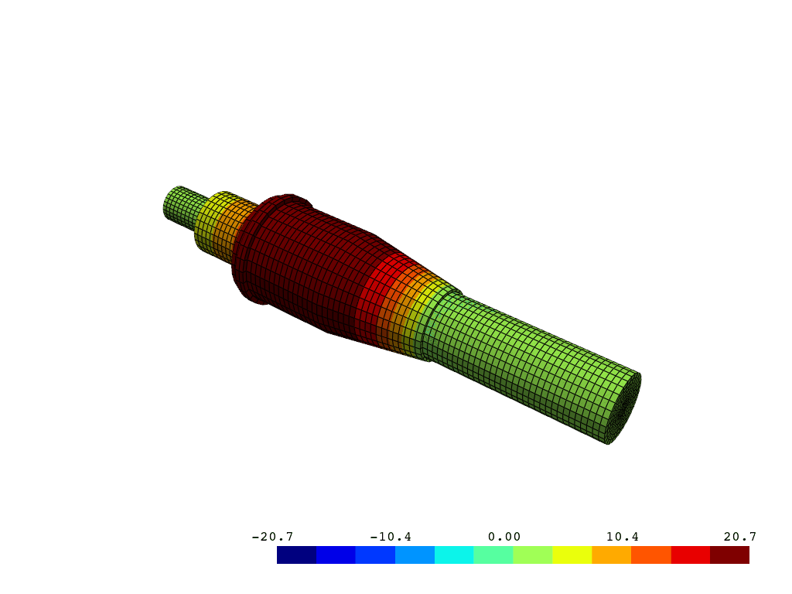

Note
Go to the end to download the full example code.
Shaft Modal Analysis#
Visualize a shaft modal analysis
# sphinx_gallery_thumbnail_number = 6
from ansys.mapdl.reader import examples
# Download an example shaft modal analysis result file
shaft = examples.download_shaft_modal()
Mesh is stored within the result object
print(shaft.mesh)
ANSYS Mesh
Number of Nodes: 27132
Number of Elements: 25051
Number of Element Types: 6
Number of Node Components: 4
Number of Element Components: 3
…and contains a VTK unstructured grid
print(shaft.mesh._grid)
None
Plot the shaft
cpos = shaft.plot()
# list shaft node components

/home/runner/work/pymapdl-reader/pymapdl-reader/.venv/lib/python3.14/site-packages/ansys/mapdl/reader/rst.py:3044: PyVistaFutureWarning: The default value of `algorithm` for the filter
`UnstructuredGrid.extract_surface` will change in the future. It currently defaults to
`'dataset_surface'`, but will change to `None`. Explicitly set the `algorithm` keyword to
silence this warning.
mesh = grid.extract_surface()
print(shaft.element_components.keys())
dict_keys(['EBC1', 'EBC2', 'SHAFT_MESH'])
Plot a node component
This camera angle was saved interactively from shaft.plot

Plot a node component as a wireframe:

Plot the shaft with edges and with a blue color:
shaft.plot(show_edges=True, color="cyan")

Plot the shaft without lighting but with edges and with a blue color:
shaft.plot(lighting=False, show_edges=True, color="cyan")

Plot a mode shape without contours using the “bwr” color map:

Plot a mode shape with contours and the default colormap:

Animate a mode of a component the shaft
Set loop==True to plot continuously.
Disable movie_filename and increase n_frames for a smoother plot

Total running time of the script: (0 minutes 6.272 seconds)